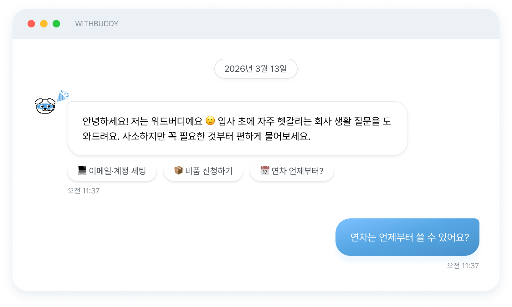
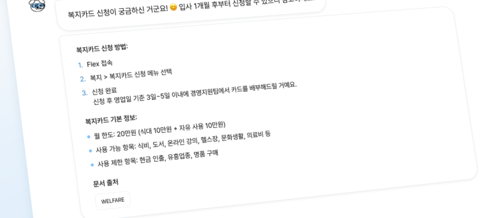
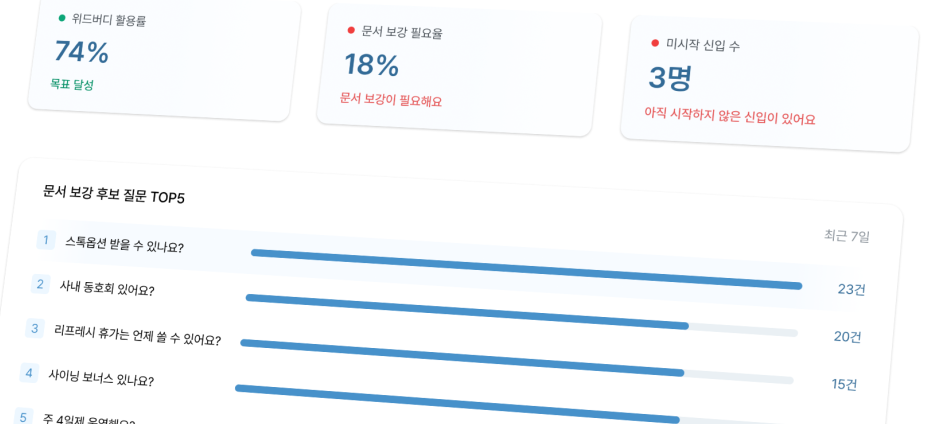
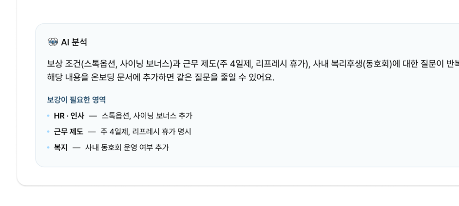
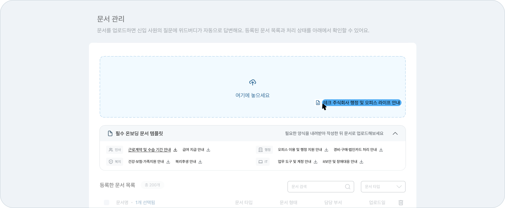
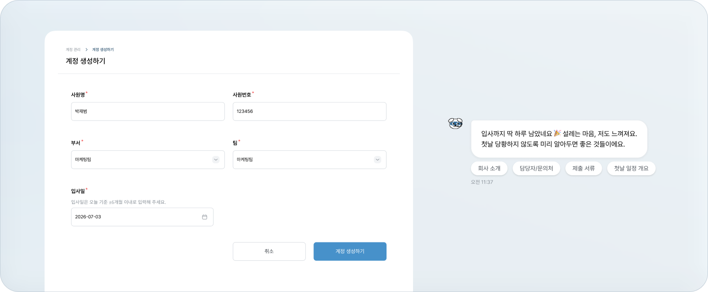
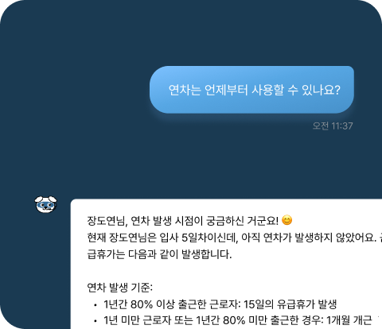

연차·복지·근무 규정·경비·비품처럼 반복되는 문의를
사내 문서 기반 AI가 1차로 응대해 담당자의 시간을 보호합니다.
사내 문서 기반 답변 · 답변 근거 문서 표시 · 관리자용 운영 대시보드

Pain Point
전담 HR이나 총무 인력이 부족한 조직일수록, 신입의 규정·절차 문의는 한 사람에게 몰립니다.
연차, 복지, 장비, 사내 규정 질문이 신입이 올 때마다 담당자에게 돌아옵니다.
규정집과 가이드는 어딘가에 있지만, 신입은 어디서 어떤 문서를 봐야 할지 몰라 결국 다시 묻습니다.
사소한 질문 응대가 쌓이면 중요한 업무 시간이 줄어듭니다. 집중이 끊기고, 다시 몰입하기까지 시간이 두 배로 듭니다.
"신입이 올 때마다 같은 안내를 반복하는 게 일이 됐어요."
— 인터뷰 참여자 (경영지원 담당)
"궁금한 게 있어도 다들 바빠 보여서 못 물어봤어요."
— 사전 설문 응답자 (입사 1년 차)
Solution
신입에게는 눈치 보지 않고 물을 수 있는 첫 창구를, 담당자에게는 반복 응대에서 벗어난 시간을 만들어드립니다.



How It Works
한 번 놓친 질문도, 다음 신입에게는 반복되지 않습니다
STEP 01 · 문서 업로드
인사·총무관련 사내 규정, 온보딩 가이드, 자주 쓰는 양식을 업로드하면 위드버디가 답변에 활용할 수 있는 지식으로 정리합니다. 문서가 없다면 표준 템플릿을 다운로드해 채워 넣기만 하면 됩니다.

STEP 02 · 신입 계정 발급
이름·부서·입사일 입력만으로 신입 계정을 생성해 전달하면 입사 전 준비가 필요한 질문부터 안내할 수 있습니다. 수습 기간이 끝나면 계정은 자동으로 정리됩니다.

STEP 03 · AI가 응대, 관리자는 확인
신입은 궁금한 점을 위드버디에 묻고, 관리자는 대시보드에서 흐름을 확인합니다.

첫 세팅부터 첫 응답까지, 평균 10분.
Use Case
인사·행정·복지·IT 문서만 등록해두면, 반복 문의는 담당자에게 도달하기 전에 먼저 해결됩니다.

For Admin
위드버디는 단순히 답변만 하는 AI가 아닙니다. 신입이 어디서 막히는지, 어떤 문서가 부족한지 함께 보여줍니다.
신입별 질문 수와 최근 활동
자동 안내된 반복 문의 비율
AI가 답하지 못한 질문 목록
문서 보강 필요 영역 TOP 5
Value
1차 응대
반복 절차 문의 자동 안내
문서로 답할 수 있는 질문을 담당자에게 가기 전 먼저 안내합니다.
월 15시간+
담당자가 온보딩과 반복 응대에 쓰는 시간
사전 설문·인터뷰에서 확인한, 담당자 1인이 신입 응대와 안내에 쓰는 평균 시간입니다. 위드버디는 이 시간을 본래 업무로 되돌리는 것을 목표로 합니다.
20분 → 5초
신입이 답을 얻기까지의 시간
문서를 직접 뒤지거나 담당자를 기다릴 때와, 위드버디에 물었을 때의 차이를 직접 측정했습니다.
위 수치는 자체 실험 측정과 사전 설문·인터뷰 결과 기준이며, 문서 등록 범위와 신입 규모에 따라 달라질 수 있습니다.
파일럿 도입 기업의 실제 효과는 검증을 진행할 예정입니다.
Security & Trust
WithBuddy는 프롬프트 공격, 내부 문서 노출, 사용자 정보 조작 등 AI 서비스에서 발생할 수 있는 주요 위험 시나리오를 검증했습니다.
시스템 역할 변경, 내부 프롬프트 노출, RAG 원문 추출 시도 등 주요 AI 공격 시나리오에 대해 방어 동작을 검증했습니다.
Prompt Injection · Prompt Leakage · Data Exfiltration 검증등록된 사내 문서를 기준으로 답변하고, 내부 문서 목록이나 검색 원문이 그대로 노출되지 않도록 설계했습니다.
내부 문서·RAG Chunk 비공개 검증서비스 상태를 모니터링하고, 데이터 백업과 복구 리허설을 통해 운영 안정성을 점검합니다.
모니터링 · 백업 자동화 · 복구 검증Target Organizations
Pricing
신입 1인당 월 1만 원 이하. 수습 기간 동안 필요한 질문을 AI가 먼저 받아줍니다.
3개월 24,900원
온보딩 질문은 매달 고르게 발생하지 않습니다. 입사 첫 달에 가장 많고, 적응할수록 줄어듭니다.
Onboarding Pack은 월별 제한 대신
3개월 통합 AI 크레딧을 제공해, 질문이 몰리는 시기에 신입이 더
편하게 물어볼 수 있도록 설계했습니다.
가볍게 시작하는 온보딩 Q&A
월 5,900원
신입 1인 기준 (부가세 별도)
신입이 규정·복지를 가끔 묻는 정도라면 충분해요.
Basic 플랜 시작질문이 많은 달을 위한 여유 있는 플랜
월 8,900원
신입 1인 기준 (부가세 별도)
입사 첫 달처럼 질문이 몰리는 시기, 문서 운영까지 챙기고 싶다면.
Plus 플랜 시작보안 요건, 전담 지원, 대규모 채용이 필요한 조직
별도 문의
규모와 요구에 맞춰 협의
월간 플랜은 매월 갱신되는 구독 방식이고, Onboarding Pack은 수습 기간 3개월을 하나로 묶어 할인된 가격에 제공하는 패키지입니다. Pack은 3개월 통합 크레딧을 포함해 질문이 몰리는 첫 달에 집중 사용할 수 있습니다.
수습 기간 종료일에 맞춰 신입 계정은 자동으로 비활성화됩니다. 관리자가 수동으로 연장하거나 즉시 정리할 수도 있습니다.
네, 표준 온보딩 템플릿을 제공하고 있어 내용을 채워 넣기만 하면 바로 시작할 수 있습니다. 기존 문서가 있다면 그대로 업로드해도 됩니다.
위드버디는 등록된 사내 문서를 근거로만 답변하고, 모든 답변에 출처 문서를 함께 표시합니다. 문서에서 답을 찾지 못한 질문은 추측으로 답하지 않고 담당자 확인으로 연결되며, 해당 질문은 대시보드에 기록되어 문서 보강에 활용할 수 있습니다.
WithBuddy는 AI 응답 보호, 문서 원문 노출 방지, 운영 모니터링 및 백업 체계를 갖추고 있습니다. 주요 AI 공격 시나리오에 대한 방어 검증을 완료했습니다.
30일 무료 파일럿으로 실제 효과를 먼저 확인하세요.
도입 상담 답변은 평균 1영업일 이내 · 계약 없이 파일럿 종료 가능 도입 문의 시 영업일 기준 1~2일 내 담당자가 연락드립니다.